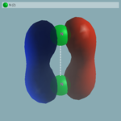
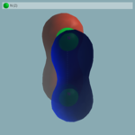
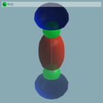
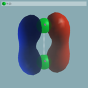
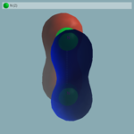
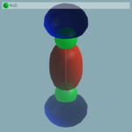

This lesson has been created for current stable version. Earlier versions are fully capable of running this tutorial but input files may have to be changed according to possible earlier formats.
Basics of BigDFT: managing different calculations,
N2 molecule as example
BigDFT code is organized by optional input files, anyone with compulsory variables. Input files can be organised in different sets, each one associated to a particular calculation. With this lesson you will have to deal with the different outputs of BigDFT code, such as to learn how to manipulate basic DFT objects.
Default run: no input files
As mentioned above, all the BigDFT files are optional, except the... atoms positions.
This means that a DFT calculation can be done also by giving the atomic positions file only.
Consider for example the N2 molecule, given by the posinp.xyz file:
2 angstroem free N 0. 0. 0. N 0. 0. 1.11499
Run the code in a directory which has only this file.
user@garulfo:~/N2/$ ls bigdft posinp.xyz user@garulfo:~/N2/$ ./bigdft | tee N2.out ...
The screen output should then behave like that:
------------------------------------------------------------------------------------
| Daubechies Wavelets for DFT Pseudopotential Calculations |
------------------------------------------------------------------------------------
The Journal of Chemical Physics 129, 014109 (2008)
|... (file:input.perf.. not present)............................Performance Options
|debug F Debug option
|fftcache 8192 Cache size for the FFT
|accel NO Acceleration (NO, CUDAGPU, OCLGPU)
|blas F CUBLAS acceleration
|projrad 1.50E+01 Radius of the projector as a function of the maxrad
|exctxpar BC Exact exchange parallelisation scheme
|ig_diag T Input guess: (T:Direct, F:Iterative) diag. of Ham.
|ig_norbp 5 Input guess: Orbitals per process for iterative diag.
|ig_blocks 300 800 Input guess: Block sizes for orthonormalisation
|ig_tol 1.00E-04 Input guess: Tolerance criterion
|methortho 0 Orthogonalisation (0=Cholesky,1=GS/Chol,2=Loewdin)
|rho_commun DBL Density communication scheme
|... (file:input.dft.. not present)......................DFT Calculation Parameters
|0.45 0.45 0.45 hx,hy,hz: grid spacing in the three directions
|5.0 8.0 c(f)rmult: c(f)rmult*radii_cf(:,1(2))=coarse(fine) atom-based radius
|1 ixc: exchange-correlation parameter (LDA=1,PBE=11)
|0 0. ncharge: charge of the system, Electric field
|1 0 nspin=1 non-spin polarization, mpol=total magnetic moment
|1.e-4 gnrm_cv: convergence criterion gradient
|50 1 itermax,nrepmax: max. # of wfn. opt. steps and of re-diag. runs
|6 6 ncong, idsx: # of CG it. for preconditioning eq., wfn. diis history
|0 dispersion correction potential (values 1,2,3), 0=none
|0 0 0 InputPsiId, output_wf, output_grid
|0.0 30 rbuf, ncongt: length of the tail (AU),# tail CG iterations
|0 0 0 Davidson subspace dim., # of opt. orbs, # of plotted orbs
|2 verbosity of the output 0=low, 2=high
|F disable the symmetry detection
|... (file:input.kpt.. not present)..............Brillouin Zone Sampling Parameters
|manual K-point sampling method
|1 Number of K-points
|0. 0. 0. 1. K-pt coords, K-pt weigth
|... (file:input.mix.. not present)...............................Mixing Parameters
|0 Mixing parameters
|1 Maximum number of diagonalisation iterations
|1.e-4 Stop criterion on the residue of potential or density
|0 0.0 Number of additional bands, electronic temperature
|0.0 2.0 Multiplying factors for the mixing and the elctronic DIIS
|... (file:input.geopt.. not present)...........................Geometry Parameters
|BFGS Geometry optimisation method
|1 Maximum number of force evaluations
|1.0 0.0 fract_fluct,forcemax
|0.0 random displacement amplitude
|4.0 Stepsize for the geometry optimisation
|... (file:input.tddft.. not present).............................TD-DFT Parameters
|NONE TDDFT Method
|... (file:input.sic.. not present)..................................SIC Parameters
|NONE SIC method: NONE, PZ, NK
|0.0 SIC downscaling parameter
|0.0 Reference occupation fref (NK case only)
|----------------------------------------------------------------------------------
| Data Writing directory: not needed
[...]
Each input file contains compulsory lines, with the exception of input.perf which controls developer-oriented performance variables.
You can see there the possible optional files which BigDFT might read.
Since they do not exist, their default values are applied to the code.
Basically, they correspond to Single-Point LDA calculation, without k-points nor spin-polarisation.
Since the input files are not present, default files are written in the submission directory:
user@garulfo:~/N2/$ ls default.dft default.geopt default.kpt default.mix default.sic default.tddft posinp.xyz time.prc
All these default files represent the template you should use to define your calculation. Also, the default Pseudopotentials are used.
Using a naming scheme for IO files
All input parameters can be found in files with a naming prefix. By default, this prefix is input (or posinp for atomic input positions). For instance, parameters for geometry optimization will be set up by a file named input.geopt. One can choose the naming prefix by providing an argument to bigdft command line.
Imagine for example that you are interested in visualizing the wavefunctions output of the calculation. To do that, you should enter the suitable parameters in the .dft file. Create a new calculation set by using the "LDA" prefix and rename all relevant files with LDA:
user@garulfo:~/N2/$ cp default.dft LDA.dft user@garulfo:~/N2/$ cp posinp.xyz LDA.xyz
Modify LDA.dft such as to output the wavefunctions at the end of calculation, by putting the output_wf variable to 1
(Which repsesents the formatted output. Also 2 (binary) and 3 (ETSF format) are available)
0 1 0 InputPsiId, output_wf, output_grid
Now you can run this input file, by putting "LDA" as a command line argument of the code:
user@garulfo:~/N2/$ ./bigdft LDA | tee LDA.out
You can now see that the LDA.dft file is read.
When using a naming scheme, the output files are placed in a directory called data-{naming scheme}. In our LDA example, the wavefunctions of the system can thus be found in the data-LDA directory:
user@garulfo:$ ls data-LDA/ wavefunction-001-NR.0001 wavefunction-001-NR.0002 wavefunction-001-NR.0003 wavefunction-001-NR.0004 wavefunction-001-NR.0005
Here 001 means the first K-point (meaningless in this case), N stands for non spin-polarized, R for real part and the remaining number is the orbital ID. Post-processing of these files will be done later.
In the same spirit, another calculation can be done with different parameters.
Imagine we want to perform a Hartree-Fock calculation. In BigDFT, this can be done by putting the ixc input variable to 100. So, copy the LDA.dft file to HF.dft and modify it accordingly (don't forget to rename also the coordinate file). This time, an error will occur:
user@garulfo:$ ./bigdft HF | tee HF.out
[...]
ERROR: The pseudopotential parameter file "psppar.N" is lacking,
and no registered pseudo found for "N", exiting...
user@garulfo:$
This is because the pseudopotential is assigned by default in the code only for LDA and PBE XC approximations. You can find here the pseudopotential which is taken by default in the LDA run. Put it in a psppar.N file, and run the calculation (redirect the output in the file HF.out for example). When possible, care should be taken in choosing a pseudopotential which has been generated with the same XC approximation used. Unfortunately, at present HGH data are only available for semilocal functionals. Data of the calculation can be analysed. Consider the eigenvectors of the LDA and HF runs.
Exercise: Compare the values of the HOMO and HOMO-1 eigenvalues for the LDA and the HF run. Change the values of the hgrid and crmult to find the converged values. Note that, both in the LDA and in the HF calculation, a norm-conserving PSP is used. The results can be compared to all-electron calculations, done with different basis sets, from references (units are eV):
- S. Hamel et al. J. Electron Spectrospcopy and Related Phenomena 123 (2002) 345-363
- P. Politzer, F. Abu-Awwad, Theor. Chem. Acc. (1998), 99:83-87
LDA(1) HF(1) HF(2) (Exp.)
3σg 10.36 17.25 17.31 (15.60)
1πu 11.84 16.71 17.02 (16.98)
2σu 13.41 21.25 21.08 (18.78)
The results depends, of course, on the precision chosen for the calculation, and of the presence of the pseudopotential.
As it is well-known, the pseudopotential appoximation is however much less severe than the approximation induced by typical XC functionals. We might see that, even in the HF case, the presence of a LDA-based pseudopotential (of rather good quality) does not alter so much the results. Here you can find the values from BigDFT calculation using a very good precision (hgrid=0.3, crmult=7.0)
LDA HF
3σg 10.40 17.32
1πu 11.75 16.62
2σu 13.52 21.30
How much these values differ from the calculation with default parameters? Does they converge to a given value? How much is the correlation of the N2 molecule in (PSP) LDA?
Visualise wavefunctions
The wavefunctions are output by choosing a non zero value for parameter output_wf in the .dft file. Several formats are available, but in each, only the non-null coefficient of the Daubechies wavelet representation are saved. This represent a compressed way of storing the wavefunctions (and roughly correspond to a dump of what is stored in memory during the calculation). To post-process the wavefunctions, one need to get their value on a real space grid.
This is done by using memguess with the exportwf argument:
user@garulfo:~/N2/$ ./memguess 1 LDA exportwf data-LDA/wavefunction-001-NR.0001
It creates four files.
wavefunction-[...].xxxx_avg_{x,y,z}: which is the projection of the wavefunction value along a given axis.wavefunction-[...].xxxx.cube: which is the values of the wavefunction (either real or imaginary part) on a regular real space mesh.
One can then visualise the wavefunction expansions with their favorite program. Let's take V_Sim as an example. Open V_Sim with the following command line (using the cube file as a file for atomic coordinates and the same cube file for a scalar field):
user@garulfo:~/N2/$ v_sim -f data-LDA/wavefunction-001-NR.0001.cube data-LDA/wavefunction-001-NR.0001.cube
Go to the "iso-surface" tab and click on the "add" button on the right. It will create an iso-surface representing the half value position of the first orbital.One can use the "open" button on top-right of the tab to choose another cube file. Let's load all our five wavefunctions (after exporting them to cube files as for the first one). Then, select each of them and click on the add button to plot iso-surfaces.
One can remove plotted iso-surfaces by clicking on the "remove" button on the right or simply hide them by unchecking the box on the line of the iso-surface. One may use this V_Sim resource file to obtain the same rendering as for the screenshots. The orbitals should look like these:

 





As on the eigenvalues printed at the end of the calculation, one can see that the orbitals labelled 3 and 4 (the two π orbitals) are clearly degenerated:
e( 1)= -1.03032489370326E+00 2.0000 e( 2)= -4.95465225967267E-01 2.0000 e( 3)= -4.30176175111339E-01 2.0000 e( 4)= -4.30175870652628E-01 2.0000 e( 5)= -3.80429461838816E-01 2.0000
Exercise: Plot also the orbitals obtained in the Hartree-Fock calculation. Using the average on the z axis, compare the expansion of the σ orbitals.
Spin polarized calculations on the isolated Nitrogen atom
Spherical Isolated Atom calculation: adding occupation numbers
A rather common functionality which is desirable is to control at hand the occupation numbers of the Kohn-Sham orbitals.
In BigDFT, this can be done with the [input].occ file, where [input] is the name of the calculation (which is indeed input if the name is not provided). Let us try to see how this can be used.
First of all, let us perform a calcualtion of the isolated Nitrogen atom. To do this, modify posinp such that only one atom is considered. Clearly, its actual position does not matter. Run a BigDFT calculation, with the same input file as the LDA case of before. This will run the N atom system in a spin-averaged case. However, you should notice several messages in the screen output:
[...] WARNING: odd number of electrons, no closed shell system [...] --------------------------------------------------- End of Wavefunction Optimisation final ekin, epot, eproj 6.75020929031E+00 -9.80422570119E+00 9.52730931346E-01 final ehart, eexcu, vexcu 8.17020231438E+00 -2.18843884745E+00 -2.86507737449E+00 FINAL iter,total energy,gnrm 8 -9.59484926687149198E+00 5.15E-05 --------------------------------------- Kohn-Sham Eigenvalues and Occupation Numbers e( 1)= -6.76300135330237E-01 2.0000 e( 2)= -2.66781082160980E-01 2.0000 e( 3)= -2.40952063353801E-01 1.0000 Difference:evsum,energybs -2.1271144983362E+00 -2.1012854795290E+00 [...]
Spin-averaged atom: spherical versus non-spherical run
Since the number of electrons of the Nitrogen atom is odd, the last orbital (the third) is only half occupied. In addition, the configuration is not spherical. Run another run by inserting the follwing information in the [input].occ file:
4 1 2. 2 1. 3 1. 4 1.
The first line is the number of orbital you put in the system. Then the association orbital-occupation number are written in the other lines. You migh also put only lines which refer to orbitals which have non-default occupation number (2 in this case). See if the energy lowers: it should. Moreover, the warnings of the previous output are now completed by additional information:
[...] WARNING: odd number of electrons, no closed shell system The occupation numbers are read from the file "input.occ" (4 lines read) Total Number of Orbitals 4 occup(1)= 2.0000 occup(2:4)= 1.0000 [...] --------------------------------------------------- End of Wavefunction Optimisation final ekin, epot, eproj 6.77542530012E+00 -9.86912485779E+00 9.53383895463E-01 final ehart, eexcu, vexcu 8.14497978312E+00 -2.15988903127E+00 -2.82730378186E+00 FINAL iter,total energy,gnrm 8 -9.61788069474253327E+00 3.76E-05 --------------------------------------- Kohn-Sham Eigenvalues and Occupation Numbers e( 1)= -6.74794648720006E-01 2.0000 e( 2)= -2.63575870275992E-01 1.0000 e( 3)= -2.63575870275992E-01 1.0000 e( 4)= -2.63574648371196E-01 1.0000 Difference:evsum,energybs -2.1403156863632E+00 -2.1403156622103E+00 [...]
Perform a spin-polarized calculation: adding a spin
Now you can add the (collinear) spin degree of freedom to the system. Since it is a single atom, Hund's rule implies also a given polarization. According to this, this should generate a up-down collinear polarization of 3 electrons. To control that, create an input file in which nspin and mpol
Decide the Input Guess polarization
The code will not work immediately, since it will ask for a Input Guess polarization of the system:Total Number of Electrons 5 Spin-polarized calculation ERROR: Total input polarisation (found 0) must be equal to norbu-norbd. With norb=5 and mpol=3 norbu-norbd=3To polarize the atoms, you should enter their polarization explicitly in the input position file. Since here there is only one atom and the sum of IG polarizations should be identical to the total magnetization
mpol, you are forced to put a 3 at the end of the line associated to the N atom:
1 angstroem free N 0. 0. 0. 3Then the calculation can run. You can see that the energy is remarkably lower than in the best possible spin-averaged run:
--------------------------------------------------- End of Wavefunction Optimisation final ekin, epot, eproj 7.03464034486E+00 -1.01505536418E+01 9.16339342495E-01 final ehart, eexcu, vexcu 8.26953088669E+00 -2.31961067758E+00 -3.04713509766E+00 FINAL iter,total energy,gnrm 9 -9.74158042107937305E+00 7.88E-05 --------------------------------------- Kohn-Sham Eigenvalues and Occupation Numbers Total magnetisation: 3.000000 e( 1,u)= -7.21890615568107E-01 1.0000 1.0000 e( 1,d)= -5.50477513768522E-01 e( 2,u)= -3.09068827964518E-01 1.0000 e( 3,u)= -3.09068827964516E-01 1.0000 e( 4,u)= -3.09068169210905E-01 1.0000
Exercise: Charge the Nitrogen atom (say, remove one electron) and compare the energies of the system in symmetric spin-averaged configuration with respect to the spin-polarized case
The [input].occ file